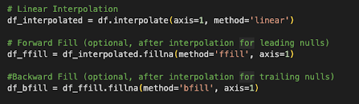

The UniversityRankings website is a joint project run by the State Secretariat for Education, Research and Innovation and swissuniversities that provides a compilation of global university rankings from multiple sources. For our study, we have decided to work on the QS Top Universities global university rankings from 2004 to 2024. More information on UniversityRankings, QS Top Universities and their data collection methodologies can be found in the links below.
The World Development Indicators provided by The World Bank is a compilation of relevant, high-quality, and internationally comparable statistics about global development. From the available indicators, we have selected 21 social and economic indicators with data from 2003 to 2023 on 217 countries to analyze how they relate to educational growth. More information on The World Bank data compilation and the World Development Indicators can be found in the links below.
Preprocessing
The data needed some preprocessing as some indicators had null values for some years. This would become a problem in analyzing the data effectively so the null values were replaced by estimated values. For missing data between years with available data, we used interpolation to fill it in. For the trailing and leading missing values, we used backward and forward fill respectively. This was done in Python using the pandas dataframe library. However, there are still missing values for some indicators. These imputation techniques were the best to use as there is a linear trend between the data points across the years. Backward fill in was used to fill in missing values at the start of the time series and forward fill in was used as indicators trend slowly over time. Below is a snippet of the Python code.
